Help on validating leaf damage
When rating images for damage you are only scoring for leaf mines. Horse chestnut tree leaves may also be damaged by fungal attack or stress and many of the images in our study will contain evidence of these. Use the table and images below to help you become familiar with the differences.
Detailed identification guide
| Leaf mines | Not leaf
mines Leaf blotch fungus |
Not leaf
mines Other damage |
|---|---|---|
| Colour | ||
| Fresh leaf mines start pale whitish-green with a dirty
brown spot (where the moth pupates). Leaf mines turn chestnut brown in colour after the moth has emerged. Leaves may contain a mixture of old mines and fresh mines. Leaf mines never have a yellow edge, except in occasional instances where the leaf blotch fungus attacks old leaf mines. |
Chestnut brown in colour, but always with a yellow edge. | Brown in colour, sometimes with a yellow edge (probably where the leaf blotch fungus has attacked the damage). |
| Shape and size | ||
| Leaf mines start circular and then become longer. Large
leaf mines are roughly rectangular with rounded corners. In heavily infested leaves leaf mines merge together, but the damaged area still has a regular edge with rounded corners and rarely crosses the mid-vein of the leaf. |
Always with an irregular boundary. Usually cross leaf veins. Each patch of damage is a spreading single blotch, which may be much larger than a leaf mine. | Always with an irregular boundary. Shape varies, but can be very small to covering the whole of the leaf edge. |
| Position | ||
| Leaf mines usually start away from the edge of the leaf and spread within the area between veins. | Usually extends from the edge of the leaf towards the centre. | Position varies. Damage due to vessels in the tree that carry sap normally produces browning along the edge of the leaf. Damage due to exposure or abrasion can produce brown patches that may or may not cross leaf veins. |
Typical Examples
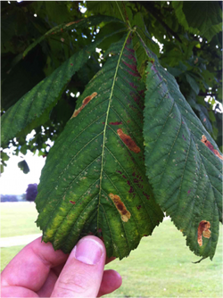
- Damage rating 1
- Only a few leaf mines on each leaflet.
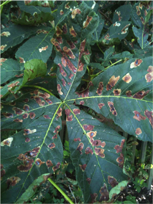
- Damage rating 2
- More than just a couple of leaf mines, but definitely more green than damage. All these leaf mines are older and have turned brown.
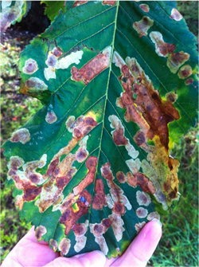
- Damage rating 3
- All the damage here is leaf mines, but it is hard to say whether there is more leaf mines or green leaf. Notice that some of the older leaf mines have been attacked by the fungus (so have a yellow edge), but they are clearly the same shape as other leaf mines.
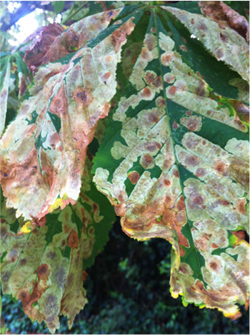
- Damage rating 4
- Lots of fresh mines that are clearly lots of joined-together blotches rather than a single spreading blotch, such as the leaf blotch fungus.
Tricky Examples with Expert Comments
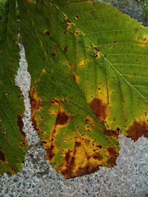
- Damage rating 0
- The brown blotches are the leaf blotch fungus, not the leaf-mining moth, because they have an irregular shape and a yellow edge.
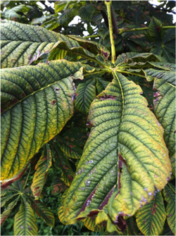
- Damage rating 0
- The brown blotches are leaf damage but are not the leaf miner (they are too narrow) and they are not the leaf blotch fungus (they are not edged with yellow).
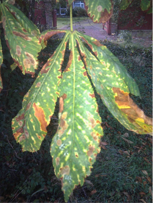
- Damage rating 1
- A couple of fresh leaf mines (on the bottom left of the largest leaflet), but larger patches of the leaf blotch fungus (irregular brown patches with a yellow edge).
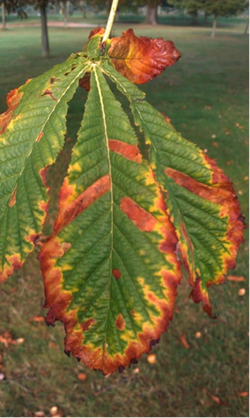
- Damage rating 1
- The leaf-miner has produced three large mines on the middle of the leaf (plus two small ones at the leaf tip). All these mines are old, which is why they are brown. The browning at the edge of the leaf is due either to damage to sap-carrying vessels in the tree or the leaf blotch fungus.
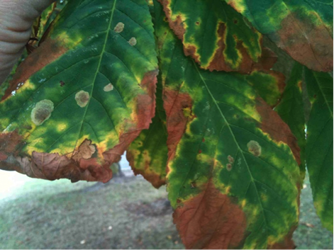
- Damage rating 1
- A few fresh mines. These are pale green with a dirty brown mark. The moth caterpillars will still be growing inside these mines. None of the chestnut brown markings on the edge of the leaf are the miner – they are the leaf blotch (notice the irregular edge ringed with yellow).
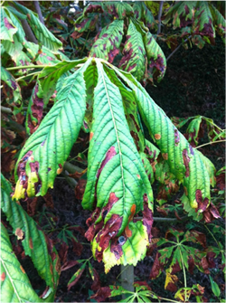
- Damage rating 1
- A few old leaf mines (brown and within the main leaf veins), plus what appears to be some other damage (brown with an irregular edge and crosses the leaf veins, no yellow edge, so not the leaf blotch fungus).
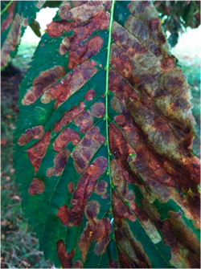
- Damage rating 4
- Clearly more leaf mines than green leaf. There are several generations of the leaf mines: old, brown mines (probably over 1 month since the adult moth emerged) and pale yellowish-green mines with a dirty splodge, which are fresh mines.
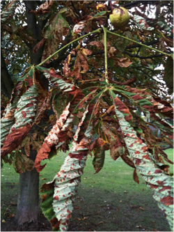
- Damage rating 4
- The whole leaf cannot be seen, but the pattern of the blotches (where they can be seen) and the lack of any yellowing means this is clearly the leaf miner. This is typical of the damage to severely affected trees by mid-summer.
See the results so far

Take a look at the results from 2011 so far.